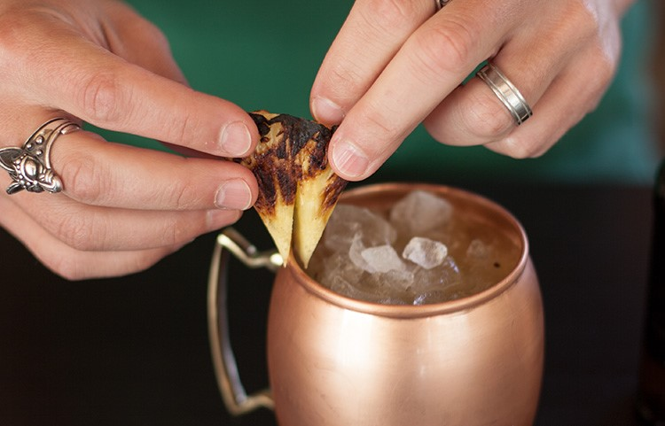
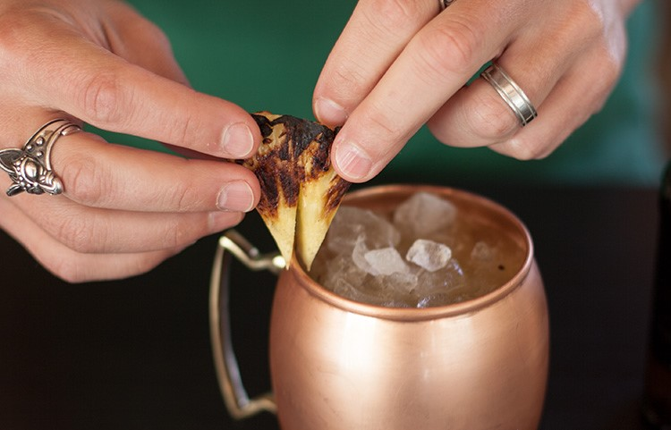

MOSCOW MULE DE ABACAXI GRELHADO
Com a primavera logo ali, é difícil não querer algo um pouco refrescante. Ok, tudo bem, eu admito, nós moramos no Brasil, a cerca de 10 minutos da praia, então sempre faz uns 25° e está ensolarado, mas ainda é legal quando as flores estão florescendo. Então começamos a pensar: "Ok, refrescante? Mas talvez com alguma fruta fresca? Afinal, é primavera." Foi isso que fizemos. Apresentamos o Moscow Mule de Abacaxi Grelhado.
Para começar, quando você tiver sua churrasqueira acesa (eu prefiro carvão de madeira em pedaços, mas qualquer coisa que faça você sair de casa está ótimo para mim), grelhe o abacaxi até que esteja pronto. Vamos voltar um pouco. Quando eu era criança, minha mãe sempre me dizia para cozinhar as coisas "até ficarem prontas", o que me irritava profundamente. Como eu deveria saber quando estava pronto? Não é como se a comida estivesse me falando algo. Avançando alguns anos até agora, quando você cozinha por tempo suficiente, sabe quando está pronto. Então é isso, grelhe até ficar pronto (procure uma leve chama por fora).
Quando estiver pronto, corte o abacaxi em pedaços, coma alguns para controle de qualidade e, então, é basicamente um Moscow Mule normal (limão, vodka, cerveja de gengibre). Ah, sim. Um fato importantes e divertido sobre o Moscow Mule.
Primeiro ponto: o copo, ou neste caso, a caneca de cobre. É um requisito? Não necessariamente, um martini fora de uma taça de martini ainda é um martini. (Isso é muitos martinis.) No entanto, quando você tem uma caneca de cobre incrível, ela eleva a sua bebida para um nível especial. Honestamente, elas não são muito caras e se você planeja saborear um Moscow Mule, vale muito a pena investir em ter a sua própria. De cobre, resistem ao embaçamento e são sensuais. Não se pode pedir muito mais. Agora, vamos entrar em ação!
 

Ingredientes
- - 60 ml de vodka.
- - Meio limão cortado em 4 pedaços.
- - 1 rodela de abacaxi fatiada.
- - Cerveja de gengibre.
- - Gelo.
- - Copo: Caneca de cobre
Como fazer
- - Grelhe a rodela de abacaxi.
- - Fatie o abacaxi.
- - Adicione a vodka, os pedaços de limão e os pedaços de abacaxi em um copo de mistura.
- - Amasse tudo.
- - Adicione gelo.
- - Mexa bem.
- - Despeje na caneca.
- - Complete com cerveja de gengibre.
- - Decore com um pedaço de abacaxi grelhado